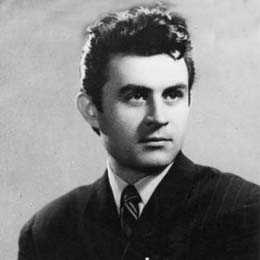

Three Poets

16.06.1925 - 04.04.1977
Stuff about Baconsky.
Anatol E. Baconsky (June 16, 1925, Cofa, Chelmenti, Ukraine - March 4, 1977, Bucharest, RS Romania) was an essayist, poet, prose writer, journalist, literary theorist and Romanian translator of modernist orientation. The father of the diplomat, writer and politician Teodor Baconschi. Published under the name A. E. Baconsky.
He was the son of Eftimie Baconsky, the Bessarabian Orthodox priest, and of Libya. The original E from his name comes from the father's name, Eftimie, according to Russian custom.
© 2010 Nobody at all | Contact